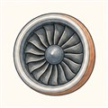
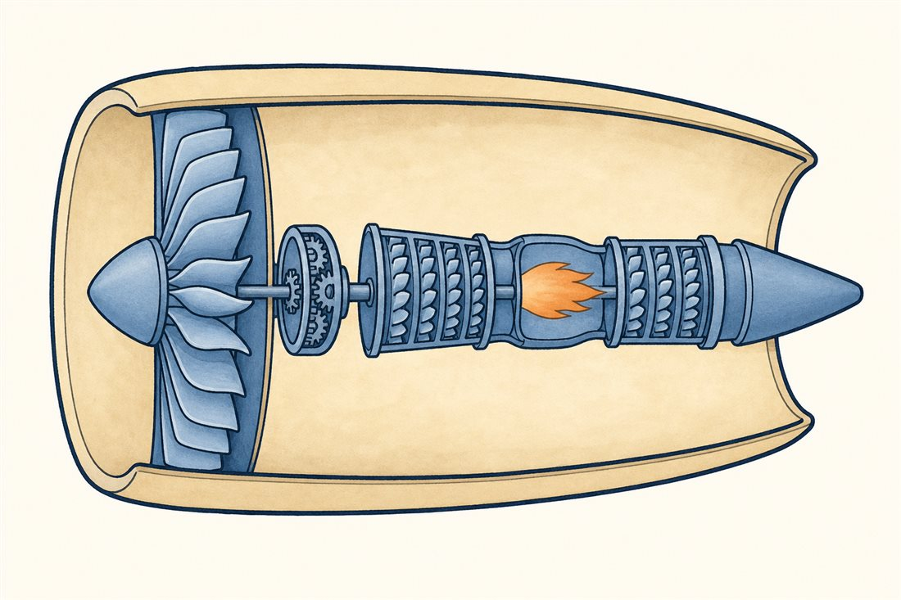

第2巻 だい4わ ── エンジンの章大きく、ゆっくり なげる
ここから最終話まで、ずっとエンジンの中に潜ります。まず外から一周——最近の旅客機のエンジン、年々太っていくと思いませんか。あれは飾りではありません。第1巻第2話の推力の式 F≒ṁ·Δv を思い出してください。同じ推力を出すなら、「少ない空気を速く投げる」より「たくさんの空気をゆっくり投げる」ほうが燃料の得——この一行が、エンジンをどんどん太らせてきました。
その思想を形にしたのがターボファンです。中心の小さな「コア」が焚き火のように動力を作り、その動力で先頭の大きなファンを回す。空気の大部分は燃焼室を通らず、ファンで少し加速されただけでコアの外側をバイパスして流れていきます。エンジンというより「ダクトに入ったプロペラ」——それが現代のジェットです。

この「太らせる」哲学がどれだけ進んだか、バイパス比（コアを通らない空気÷コアを通る空気）の歴史で見てみましょう。
よりみちなぜ「ゆっくり」が得なのか
推進効率の式です（vj: 噴流速度、v0: 飛行速度）。推力は運動量の差 ṁ(vj−v0)で決まりますが、後ろに残していく運動エネルギーは(vj−v0)²で効く——速い噴流は、エネルギーを空にまき散らしているのです（この式は1本の噴流への理想化で、実機ではコアとバイパスの2本を別々に勘定して足します）。だから同じ推力なら、ṁを増やしてvjを下げるほど得。飛行機はロケットと違ってまわりの空気をタダで借りられるので、ファンを太らせるだけでṁが増やせます。では無限に太らせないのはなぜか——ナセルの重さと抵抗、地面との隙間、そして次の「よりみち」の回転数のジレンマが答えです。
ギアという答え — GTFのはなし
ファンを太らせると、困ったことが起きます。ファンは先端速度の都合でゆっくり回りたい（半径が大きいから、同じ回転数でも先端はすぐ音速超）。ところが同じ軸の反対側にいる低圧タービンは速く回りたい（速いほど1段で仕事が取れて、段数を減らせる）。直結ならどちらかが我慢するしかない——長年のジレンマでした。P&WのGTF（PW1000G系）はここに減速歯車（キャリアを固定したスター配置の遊星歯車系）を入れました。減速比3.0625:1、伝える動力は約3万馬力（約22MW）。ファンはゆっくり静かに、タービンは速く身軽に、両方が最適で回れます。代償はギアの重さ・発熱・信頼性の実証。いっぽうCFMのLEAPは直結のまま材料と空力で勝負——同じ式を見て、2つの会社が別の答えを出しました。決着は第9話の答え合わせで。
 流体屋のためのノート
流体屋のためのノート
全効率は熱効率×推進効率に分解できます。コアはブレイトンサイクルの熱機関（圧力比と温度が支配、06・07話）、ファンはアクチュエータディスクとしての推進器（バイパス比とファン圧力比が支配）——この2つの設計自由度を大きく切り離せるのがターボファンの発明の本質です（完全に独立ではなく、流量と仕事のマッチングで結ばれています）。バイパス比を上げるほど最適ファン圧力比は下がり、噴流は遅く太くなる。ロケットとの本質差は「作動流体を外から借りられるか」の一点で、借りられないロケットはṁを全部積んで運ぶしかない（第1巻第1話の質量比の苦しみ）。次話はこの巨大ファンの、いちばん過酷な日の話——時速300kmで、鳥が飛び込んできます。
.jpg){kind=link}
・P. Hill & C. Peterson, Mechanics and Thermodynamics of Propulsion, 2nd ed.（推進効率・サイクル）
・Wikipedia "Turbofan"・"Pratt & Whitney PW1000G"（減速比3.0625:1・約3万馬力はNZ CAA型式受入報告とWikipedia）
・バイパス比の数値: Wikipedia "CFM International LEAP"（LEAP-1A: 11）・"General Electric GEnx"（GEnx-1B: 9.3）ほか